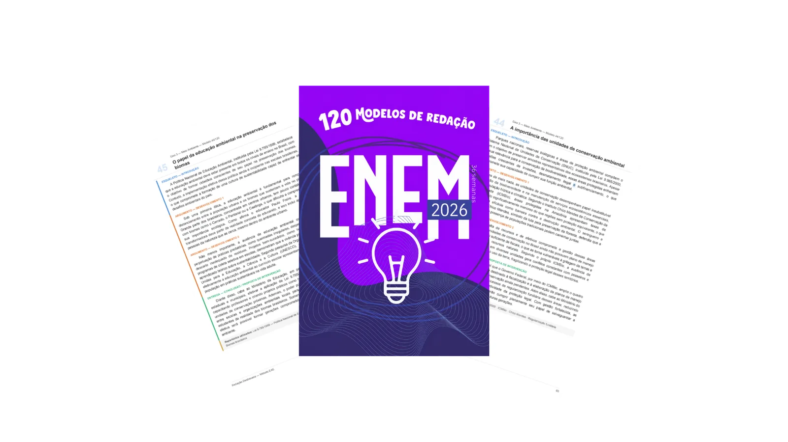
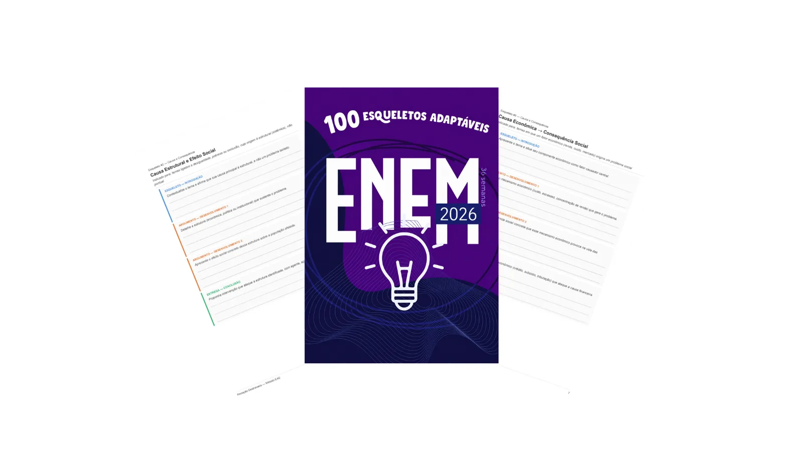
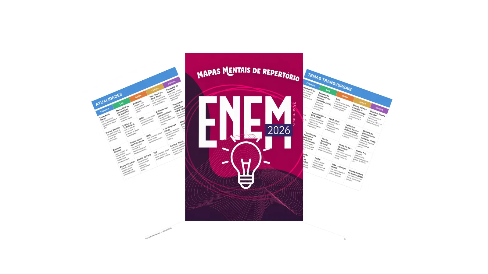
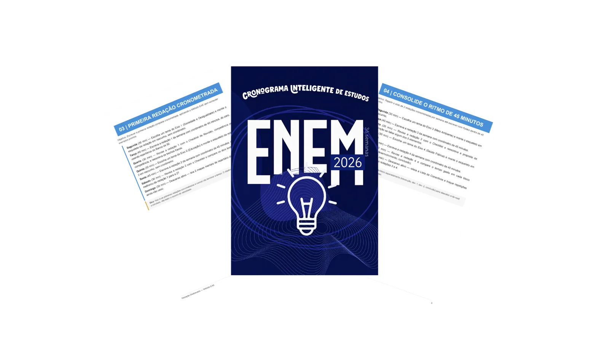
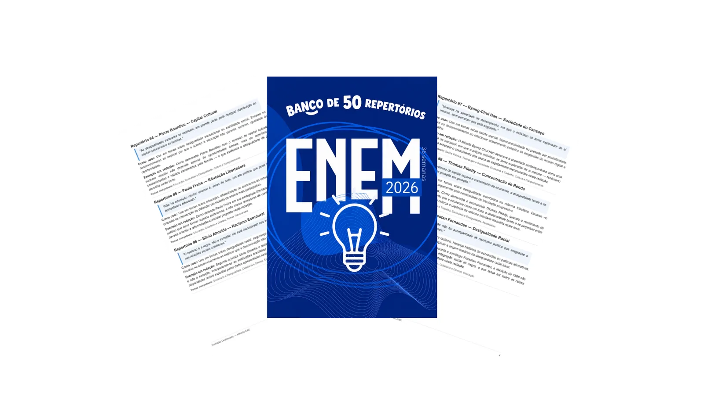
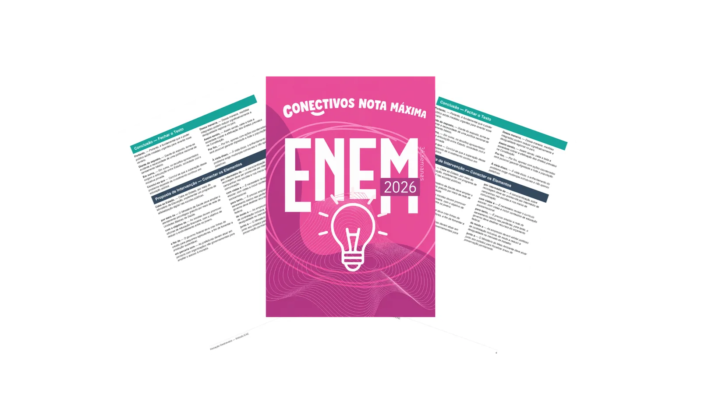
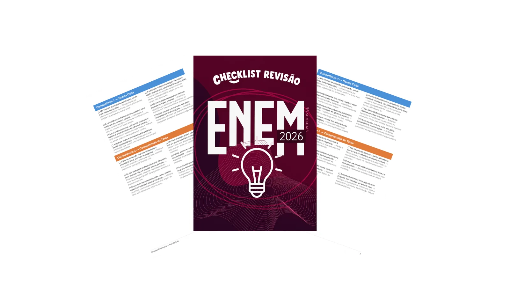

Diagnóstico gratuito · Método EAE
Antes de te mostrar tudo, vou fazer algumas perguntas rápidas. No final, você recebe um diagnóstico personalizado e gratuito sobre onde você está em cada competência da redação.
⏱️ Leva menos de 3 minutos
📝 18 perguntas sobre como você escreve hoje
📊 Resultado nas 5 competências do ENEM
🎁 100% gratuito — não precisa de cadastro
Dá uma olhada no que existe pra te ajudar em cada competência. Depois disso, o quiz.

Servem de referência pra você ver a estrutura em ação — quem escreve é você, com as suas palavras.

Tem um pra cada tipo de tema que pode cair na sua prova.

Os temas que mais caem, resumidos em uma página — pra revisar rápido antes da prova.

Organize a semana mesmo tendo só 30–40 minutos por dia pra estudar redação.

de R$39
Citações, dados e referências prontos pra encaixar em qualquer tema. Nunca mais fique sem argumento.

de R$29
Os conectivos certos pra cada transição do texto — direto na coesão que a banca pontua.

de R$27
Revise sua redação como um corretor e elimine os erros antes de entregar.
Agora sim: vamos descobrir de quais deles você mais precisa.
Veja onde você está em cada uma das 5 competências da redação — e o que fazer em cada uma delas.
Gostou do diagnóstico? O Método EAE completo — com os 7 materiais que você acabou de conhecer — vai além do diagnóstico: te dá as ferramentas práticas pra melhorar cada uma dessas competências.
Valor total: R$323
De R$47 por apenas:
R$14,99
Preço de lançamento🔒 Pagamento processado pela Ticto. Seu banco pode exibir um alerta padrão de segurança — é normal e não impede a compra.